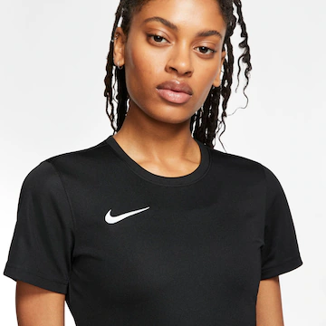
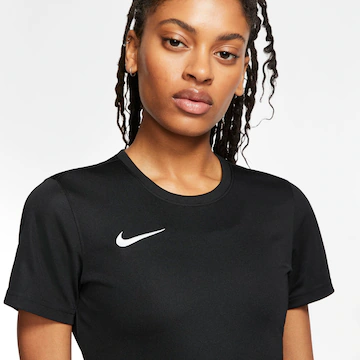
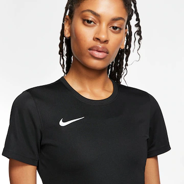
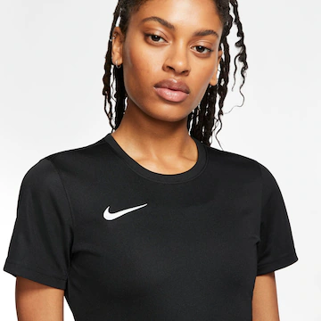

 

Descrição
MONTE DO SEU JEITO
Monte o uniforme Nike do seu time. Escolha o design de brasão que mais representa seu time e inclua os nomes e
números dos seus jogadores.
CONFORTO PARA COMPETIÇÕES.
A Camisa Nike Dri-FIT Uniformes apresenta tecido macio, que absorve o suor com mesh nas costas para ajudar a
manter você seco e mantendo o foco do apito inicial ao fim da partida.
Benefícios
Tecnologia Dri-FIT ajuda a manter você seco e confortável.
Painel em mesh nas costas para mais respirabilidade.
Detalhes do Produto
100% poliéster reciclado.
Lavável à máquina
Importado


Descrição
Seja para treinar ou relaxar, essa legging está pronta para o que você estiver. Seu tecido macio e de peso médio
é esticado a cada movimento e seca rapidamente. A ausência de uma costura frontal ajuda a evitar que o tecido
suba e crie um ajuste macio.
Algo para Todos
Nem tudo funciona para todos e é por isso que oferecemos essas leggings em vários comprimentos para todas as
atividades e todos os gostos. Além disso, combina perfeitamente com qualquer uma das nossas camisetas e tops
Nike One, disponíveis em várias cores para completar o seu look.
Cobertura Confiante
O tecido não transparente e o cós alto ajudam a manter seu bumbum coberto, independente de como se curva ou
se move. Menos costuras prometem um ajuste suave e elegante.
Mais Benefícios
Tecnologia Nike Dri-FIT absorve o suor da sua pele para evaporação mais rápida, ajudando a mantê-la seca e confortável.
O bolso traseiro quase comporta todos os tamanhos de celular.
Detalhes do Produto
Corpo/Forro da cintura: 80% poliéster / 20% elastano.
Forro reforçado: 100% poliéster.
Lavável à máquina
Importado
Não destinado ao uso como Equipamento de Proteção Individual (EPI)


Descrição
TUDO QUE VOCÊ PRECISA PARA TREINAR EM UM SÓ LUGAR.
Essa sacola guarda tudo que você precisa para a sua aula, treino ou aventura a um zíper de distância.
Ela tem um espaçoso compartimento principal e bolsos com zíper dentro e fora para uma organização
rápida. Carregue-a na mão ou nos ombros para que seu equipamento esteja sempre próximo. Este produto é
feito com, no mínimo, 65% de fibras de poliéster reciclado.
Benefícios
O compartimento principal com zíper e uma parte de baixo larga oferece bastante espaço para as suas coisas.
As alças duplas e a alça de ombro removível e ajustável permitem que você a transporte de várias formas diferentes.
O bolso com zíper interno protege seus itens pequenos.
O bolso com zíper na parte externa tem acesso fácil.
Detalhes do produto
33 cm (A) x 50 cm (L) x 23 cm (P)
Volume: 24 L
100% poliéster
Limpeza à mão
Importado